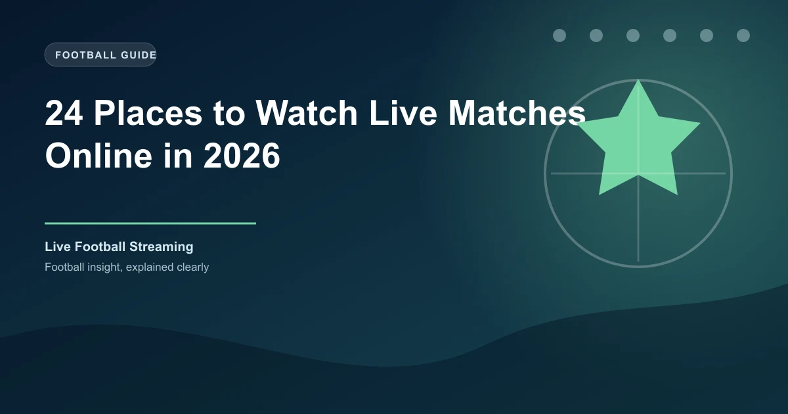

24 Places to Watch Live Matches Online in 2026: Free, Legal and Working
The same match now lives on a different platform in almost every country. This guide walks through 24 verified places to watch live football online in 2026 — from free public broadcasters to global streamers, African options and bookmaker streams from bet365, SportyBet, 1xBet, Betway and Bet9ja — all fact-checked and working right now.

Football in 2026 is the most fragmented it has ever been. A single Champions League night might be on TNT Sports in the UK, DAZN in Germany, Sky in Italy and Paramount+ in the US. The Premier League, La Liga, Serie A and the Bundesliga each live on different services in different territories, and the World Cup has its own patchwork of broadcast deals in every region. That fragmentation is the entire story of watching football online now — which is exactly why a guide like this is worth having open on a matchday.
Every platform below was checked against current, working availability in mid-2026. Nothing on this list is a dead service, a rebranded ghost, or a sketchy restream that disappears at kickoff. Where a well-known option changed hands recently — Optus Sport shut down in Australia, for example — this guide lists the platform that replaced it instead.
Before You Start
Two things determine where you can legally watch a match online: your location and who owns the broadcast rights in that location. Understanding that saves you hours of hunting.
- Rights are regional. A match that streams free on SBS in Australia may be paywalled on Peacock in the US and completely unavailable on both in the UK. The platform that works depends on where you are.
- Free does not mean legal. A stream is only legal if the broadcaster holds the rights. The September 2025 shutdown of StreamEast — a network of around 80 domains that pulled in over 1.6 billion visits a year — showed how dangerous the unofficial route can be. Piracy sites are not just unreliable; they are malware distribution operations dressed up as football.
- Geo-restrictions are part of the deal. Almost every official service checks your location. A VPN may help a traveller reach their own home services, but bypassing local licensing rules can violate platform terms of service, so check before you rely on it.
The Quick Comparison
| Platform | Best For | Cost | Region |
|---|---|---|---|
| FIFA+ | World Cup archive, federation matches | Free | Global |
| BBC iPlayer | World Cup, FA Cup, England | Free (TV licence) | UK |
| ITVX | World Cup, national team | Free (ads) | UK |
| SBS On Demand | World Cup, Socceroos | Free | Australia |
| RTÉ Player | Republic of Ireland, qualifiers | Free | Ireland |
| RTVE Play | Copa del Rey, national team | Free | Spain |
| Official YouTube | CazéTV, highlights, lower leagues | Free (ads) | Global |
| Peacock | Premier League (~175 games) | Paid | US |
| Paramount+ | Champions League, Serie A | Paid | US |
| ESPN+ | La Liga, FA Cup | Paid | US |
| Apple TV | Every MLS match | Paid | US |
| FuboTV | Live TV with deep soccer bundle | Paid | US / Canada |
| DAZN | Serie A, National League, World Cup in some markets | Paid / free tiers | Global |
| beIN CONNECT | Premier League (MENA), Ligue 1 | Paid | MENA / France / US |
| Stan Sport | Premier League, FA Cup, UCL | Paid | Australia |
| Viaplay | Premier League (selected markets) | Paid | Nordics / NL / Poland |
| DStv Stream | SuperSport, Premier League, CAF | Paid (subscriber app) | Africa |
| Showmax | Premier League mobile plan | Paid (low-cost) | Africa |
| StarTimes ON | Affordable multi-league packages | Paid (low-cost) | Africa |
| bet365 | 600k+ events with funded account | Free with funded account | Global (18+) |
| SportyBet | NPFL, African football via SportyTV | Free with account | Africa (NG / GH / KE) |
| 1xBet | 1,000+ live events streamed daily | Free with account | Global (18+) |
| Betway | Selected European leagues via Betway TV | Free with funded account | Africa / Global (18+) |
| Bet9ja | Selected football & sports streams | Free with account | Nigeria (18+) |
Free & Official Options (1–7)
These are the safest streams on the internet. Public broadcasters and official platforms hold real rights, so the video loads, stays up and — crucially — does not come with fake play buttons and casino pop-ups.
1. FIFA+
FIFA+ is football's own free streaming service. It carries live domestic league matches from more than 100 member associations, the complete FIFA World Cup archive going back decades, replays, highlights and original documentaries. It works in five languages and needs no subscription.
One important 2026 update: the free FIFA+ World Cup highlights, replays and docs now also live on DAZN (entry 13 below), which became the streaming home of FIFA+ World Cup content this year. FIFA+ itself remains fully free and is the best single starting point for global football fans.
2. BBC iPlayer
The UK's public broadcaster streamed all 104 matches of the 2026 World Cup free, and it remains the gold standard for free legal football in the UK: FA Cup, England men's and women's internationals, and highlights throughout the season. It requires a free account and a UK TV licence, runs zero ads and offers full 1080p quality. If you live in the UK and want big-match football without paying a penny, this is the platform.
3. ITVX
ITV's free, ad-supported streaming service is the natural partner to BBC iPlayer. It shared World Cup coverage in 2026, carries England internationals and the FA Cup, and adds cup highlights and EFL matches to the free mix. You can watch without any subscription — the trade-off is advertising breaks. Together, iPlayer and ITVX cover most of the UK's free-to-air football.
4. SBS On Demand
Australia's public broadcaster streams every FIFA World Cup match free, and its SBS On Demand platform is one of the best free football apps in the world. You do not even need to register to watch many events. For Australian fans who do not want a paid subscription, SBS is the official, fully licensed route to the big tournaments.
5. RTÉ Player
Ireland's national broadcaster streams Republic of Ireland internationals, World Cup and European qualifiers, and selected cup ties free on RTÉ Player. It is ad-funded, free to use, and the reliable Irish alternative to paid sports packages.
6. RTVE Play
Spain's public broadcaster, RTVE, streams the Copa del Rey and Spanish national team matches free on RTVE Play. Spanish football fans get a genuine free route to cup football and internationals without touching La Liga's paywalled services.
7. Official YouTube Channels
YouTube is quietly one of the biggest legal football platforms on earth. Brazil's CazéTV — the official streamer for the Brazilian national team and a free home of World Cup coverage in Brazil — has millions of subscribers. On top of that you get the Premier League's official highlights channel, club channels streaming friendlies and academy football, and league channels broadcasting selected lower-division and women's matches live. The rule of thumb: only trust verified channels, and treat anything with pop-ups or "install this extension" prompts as a red flag.
Subscription Streamers (8–16)
If you want a specific league week in, week out, a subscription streamer is usually the cleanest answer. Here is the 2026 landscape by territory.
8. Peacock (US — Premier League)
Peacock is the streaming home of the Premier League in the US, carrying roughly 175 exclusive games a season alongside the big matches that air on NBC. It also holds Spanish-language Premier League coverage. Around $10.99 a month, it is the single most important US service for Premier League fans.
9. Paramount+ (US — Champions League & Serie A)
CBS Sports holds US rights to all three UEFA club competitions through 2029/30, which means Paramount+ streams every Champions League, Europa League and Conference League match — plus all 380 Serie A games and the EFL Championship. From around $8.99 a month, it is the best value European football package in the US.
10. ESPN+ (US — La Liga & FA Cup)
ESPN+ streams every La Liga match in English and Spanish (rights run through 2028/29), all 79 FA Cup matches per season, the Community Shield, USL and NWSL. At around $11.99 a month it is the essential add-on for Spanish football and English cup action in the US.
11. Apple TV (US — MLS)
From 2026, Apple TV includes every MLS match with no blackouts as part of a standard subscription (from $12.99 a month). The old separate "MLS Season Pass" is gone — this is the simplest league package in US football now.
12. FuboTV (US / Canada)
FuboTV is a live-TV streamer built around sports, and its soccer bundle is the deepest in North America: ESPN and ESPN+, Fox, beIN Sports, TUDN and more on one bill. It is pricier than the single-league apps, but it is the right choice if you follow several competitions across several networks.
13. DAZN (Global)
DAZN operates in more than 150 countries and is the closest thing football has to a global streaming brand. What you get depends on your market: Serie A in Italy and Japan, the National League exclusively worldwide, World Cup rights in Italy, Spain and Japan, free FIFA+ World Cup content, and Kings League competitions across Europe and sub-Saharan Africa. Check the DAZN site for your country before subscribing, because the catalogue genuinely varies by region.
14. beIN SPORTS CONNECT (MENA / France / US)
beIN holds the Premier League rights across MENA (a renewal worth around £550m), Ligue 1 in France and parts of the Middle East, and carries its US coverage through partners like Fanatiz. beIN CONNECT is the streaming app, and in the US it is the home of Ligue 1. For fans in the Middle East and North Africa, this is the platform for the biggest league in the world.
15. Stan Sport (Australia — the Optus replacement)
This is the one most outdated guides get wrong. Optus Sport shut down in mid-2025, and Nine Entertainment's Stan Sport took over the Premier League and FA Cup in Australia — streaming every match live and on demand. Stan also carries the Champions League (Nine's existing rights), the J.League and the NWSL. If you are in Australia and the old guides tell you to open Optus Sport, open Stan Sport instead.
16. Viaplay (Nordics / Netherlands / Poland)
Viaplay holds Premier League streaming rights in Norway, Sweden, Denmark, Finland, Iceland, the Netherlands and Poland. Availability shifts as rights are renegotiated, but it remains a primary English-football destination across those markets in 2026. Check the local Viaplay page for your country's line-up.
Africa-Focused Options (17–19)
African fans have arguably the widest range of choices per naira, shilling and rand — from full SuperSport packages to phone-only Premier League plans that cost less than a cinema ticket.
Once your streaming setup is sorted, the natural next step is pairing it with the right platform — compare the top picks in our guide to the best betting apps in Africa.
17. DStv Stream + SuperSport (Africa)
SuperSport holds exclusive Premier League rights across much of Africa, and DStv Stream puts those channels on your phone, tablet and TV for existing subscribers. It covers the Premier League, CAF competitions, the Champions League and dozens more, with catch-up within 48–72 hours. In Nigeria, Kenya, Ghana and South Africa this is the gold standard — at a gold-standard price.
18. Showmax (Africa — Premier League mobile)
Showmax disrupted the African market with a standalone Premier League mobile plan that streams all 380 matches live — from around ₦3,600 a month in Nigeria and R69 in South Africa. It is phone- and tablet-only, so it is the value pick for fans who watch on mobile, not the living-room option. It does not include the Champions League.
19. StarTimes ON (Africa)
StarTimes ON is the streaming side of the Chinese-owned broadcaster that has spread across sub-Saharan Africa. Its packages are among the cheapest ways to watch European leagues plus CAF competitions in Kenya, Uganda, Nigeria and beyond, and it works well on low-end Android phones and slower connections — a genuine consideration for matchday data budgets.
Bookmaker Streaming (20–24)
The most underrated way to watch live football in 2026 is a bookmaker account. The big betting platforms do not charge you for their streams — they fund them through your wagering. Most require a registered account, and some ask for a small funded balance or a bet placed in the last 24 hours. These are betting products, not broadcasters, so availability depends on rights and your location, and the biggest leagues in each territory are usually held by the TV broadcasters. 18+ only; please bet responsibly.
20. bet365 (Global)
bet365 streams more than 600,000 events a year — the largest catalogue of any live sports platform — and in most markets that includes La Liga, Serie A, the Bundesliga, Ligue 1, the Championship, the FA Cup and deep lower-league and continental football. You do not pay for the streams: you need a funded account or a bet placed in the last 24 hours.
Two honest caveats. First, the Premier League is not streamed through licensed bookmakers in the UK because Sky Sports, TNT Sports and Amazon hold those rights. Second, this is a betting product, not a broadcaster — stream availability depends on rights and your location. 18+ only; please bet responsibly.
21. SportyBet (Africa — SportyTV)
SportyBet's streaming platform, SportyTV, is the standout bookmaker stream for African fans. In Nigeria it carries selected NPFL fixtures live — a real answer to the question of how to watch Nigerian league football without a pay-TV subscription — alongside African cup ties and other leagues, streamed inside the app and on the website. There is no monthly fee: you just need a registered, logged-in account (usually with a small positive balance, sometimes as little as ₦10).
SportyTV went further in 2026 by securing pay-TV rights to stream all 104 World Cup matches in South Africa, a sign of how serious the streaming side has become. One honest limit: it does not carry the English Premier League, which belongs to SuperSport across most of Africa.
Weighing SportyBet against its Nigerian rivals? See our Bet9ja vs SportyBet head-to-head for the odds, features and streaming comparison.
22. 1xBet (Global)
1xBet runs one of the largest live sections in sports betting, with more than 1,000 live events every day across football, tennis, basketball, hockey and more — and live video on a wide share of them, depending on broadcasting rights. In Nigeria, Ghana, Kenya and Uganda it is a staple, and its deep live markets (over 500 per match in many cases) make it a natural pairing with its streams. You need an account; streams are free once you are in, and the 1xZone tracker fills in for the matches that are not on video.
23. Betway (Africa / Global — Betway TV)
Betway's in-house Betway TV streams selected matches to logged-in users with a funded account — a mix of European football leagues, tennis and basketball, live on the site and in the app. It is one of the most widely used bookmakers in South Africa, Nigeria, Ghana and Kenya, and in South Africa its "Data Free" app even lets you bet (and stream) without burning your own mobile data. Betway also sponsors the top South African league, the Betway Premiership, so local matchdays are heavily covered.
Betway also ranks among the best betting sites in Kenya, where it competes directly with SportPesa and Betika on odds and payouts.
24. Bet9ja (Nigeria)
Bet9ja is Nigeria's biggest betting site, and its live section streams selected football and other sports to logged-in users — a handy bonus for a market where most fans already hold an account. Streaming on Nigerian bookmakers is tied to what each platform has rights to, so Bet9ja's line-up is strongest on the matches and competitions it covers in-play. If a match is not on video, its live tracker and zoom features still give you near-real-time match data to bet against.
How to Choose Your Setup
Nobody subscribes to all twenty-four. The practical approach is to build a two-tier stack, using the same line-shopping logic bettors apply to odds:
- Start free. Check your country's public broadcaster first. In the UK that is BBC iPlayer and ITVX; in Australia, SBS; in Ireland, RTÉ; in Spain, RTVE. FIFA+ covers the rest of the globe for free.
- Add the league you actually watch. Premier League in the US means Peacock; Champions League in the US means Paramount+; La Liga in the US means ESPN+. In Africa, pick Showmax for mobile-only Premier League or DStv for the full SuperSport bundle.
- Fill gaps with bookmaker streaming. In Africa, a SportyBet account unlocks NPFL and African football via SportyTV at no monthly cost, while bet365 and 1xBet add deep European coverage, Betway streams selected matches in SA/Nigeria/Ghana/Kenya, and Bet9ja covers selected streams for Nigerian accounts. The trade-off is that these are betting products, so only use them if you are comfortable with that — and you must be 18+.
- Keep YouTube for the free extras. Official channels are a reliable backup for highlights, friendlies and niche competitions.
Free vs Paid: The Honest Verdict
There is more genuinely free, legal football in 2026 than at any point in history — but it is regional. A UK resident with a TV licence genuinely does not need to spend anything to watch the World Cup, the FA Cup or England. An Australian can say the same about tournaments via SBS. The moment you want a specific club league week in, week out, you are almost always buying a subscription, because that is how league rights are sold.
The single most important rule beats all of this: watch through an official source. The price of an "unofficial" free stream is not measured in money — it is measured in malware, buffering at the 89th minute and streams that vanish mid-goal. After the StreamEast takedown in September 2025, the legal route is not just the safer one; it is increasingly the only reliable one.
Frequently Asked Questions
Is it legal to watch live football matches online for free?
Yes, if you use official broadcasters and platforms that actually hold the rights — public broadcasters like BBC iPlayer and SBS On Demand, federation services like FIFA+, or licensed free ad-supported services like Tubi. A stream is not legal just because it is free. Unauthorised restreaming sites carry malware risks and were a primary target of the September 2025 StreamEast shutdown, which covered a network of 80 domains.
What is the best free way to watch live football matches?
It depends on your country. In the UK, BBC iPlayer and ITVX stream every FIFA World Cup match free. In Australia, SBS On Demand carries all tournament games. In Ireland, RTÉ Player covers the national team and qualifiers. FIFA+ streams a wide selection of domestic league matches free in most countries. YouTube's official channels — including Brazil's CazéTV — are another reliable zero-cost option.
Can I watch live football on a betting site like bet365 or SportyBet?
Yes. bet365 streams over 600,000 events a year, including La Liga, Serie A, Bundesliga and Ligue 1 in many markets, and you normally need a funded account or a bet placed in the last 24 hours. In Africa, SportyBet's SportyTV streams selected NPFL and African football free with a registered account, 1xBet streams a wide share of its 1,000+ daily live events, and Betway and Bet9ja stream selected matches to funded or logged-in users. Note that Premier League games are not streamed through licensed bookmakers in the UK because Sky Sports, TNT Sports and Amazon hold those rights. 18+ only.
Why does the same match appear on different platforms in different countries?
Football broadcasting rights are sold region by region. In the US, the Premier League is on Peacock and NBC, the Champions League on Paramount+, and La Liga on ESPN+. In the UK the same competitions are on Sky Sports, TNT Sports and Amazon Prime Video. Streaming rights are geo-restricted, so the platform you need depends entirely on where you are watching from.
How can I watch Premier League matches online in Africa?
In Nigeria, Kenya, Ghana and South Africa, the Premier League is broadcast by SuperSport, which streams on DStv Stream for existing subscribers. Showmax offers an all-380-matches Premier League mobile plan (from around ₦3,600 in Nigeria or R69 in South Africa), and StarTimes ON is a cheaper option that covers European leagues and CAF competitions.
Final Thoughts
Watching live football online in 2026 is not about finding a magic link — it is about knowing which official service holds the rights in your country and matching it to your budget. Start with the free public broadcasters, add the one subscription that covers the league you care about, and keep the bookmaker streams as your gap-fillers: bet365 and 1xBet for European depth, SportyBet's SportyTV for Nigerian and African football, Betway and Bet9ja for their home markets. That stack covers practically every match worth watching, legally, reliably and without a single pop-up.
Watching Live? Back It With Data
Now that you know where to watch, make sure you know what to expect. Check today's data-driven predictions, in-play tips and the latest odds before kickoff.
Last updated: August 2026 | By Tochukwu Mesigo |
Build Winning Accumulator Tickets
Generate optimized accumulator combinations from today's data-driven predictions. Set your target odds and get instant ticket suggestions.
Free Ticket Builder →